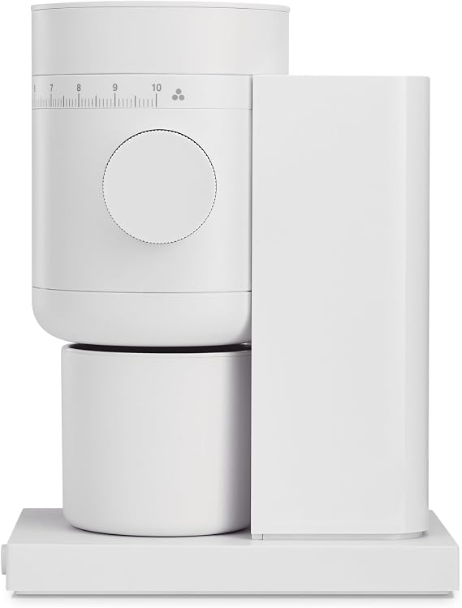

Around $500
Bambino + Encore ESP
Machine · paid Amazon link ↗ · grinder ↗
Our starter semi-auto pair. You grind and prepare the shot, then steam milk by hand.
About $499.90 · separate grinder
See workflow and trade-offs ↓Compare the shortlist
These picks cover the common forks in a home espresso setup: hands-on vs. one-touch, manual vs. automated milk, and a separate espresso-focused vs. multi-brew grinder.
The short answer
Setup totals are planning estimates at manufacturer list prices, before tax and accessories.
Around $500
Machine · paid Amazon link ↗ · grinder ↗
Our starter semi-auto pair. You grind and prepare the shot, then steam milk by hand.
About $499.90 · separate grinder
See workflow and trade-offs ↓Frequent milk drinks
Machine · paid Amazon link ↗ · grinder ↗
Keep a portafilter workflow and let the machine texturize milk automatically, or steam it yourself.
About $699.90 · separate grinder
See what the extra $200 adds ↓Fewest manual steps
The selected model grinds, brews, and froths milk at a button press; you give up some shot-by-shot control.
About $749.95 · grinder built in
See the automatic workflow ↓Traditional and hands-on
Machine · paid Amazon link ↗ · grinder ↗
A manual portafilter routine and steam wand, with a single boiler used for brewing and steaming in sequence.
About $748.95 · separate grinder
Compare the E24 trade-off ↓Want a semi-automatic with a grinder built in? The Barista Express is about $699.95 · Amazon listing · paid link ↗: it combines machine and grinder, while shot prep and milk steaming stay manual.
The machine changes the routine
For all four, you prepare the coffee puck and start the shot yourself. The difference is how much the machine does around that routine.
| Machine and gear budget | Milk workflow | Grinder role | Learning curve and best fit | Main trade-off | Amazon listing |
|---|---|---|---|---|---|
| Breville Bambino paid link ↗BES450 · about $499.90 with Encore ESP | Manual steam wand; you texture the milk. | Separate Encore ESP adds about $199.95 and occupies its own counter space. | Good first semi-auto if you want to learn shots and make espresso with occasional milk drinks. | Dialing in espresso and learning to steam are part of the routine. | Bambino ↗ |
| Breville Bambino Plus paid link ↗BES500 · about $699.90 with Encore ESP | Automatic milk with three temperature and texture levels, or manual texturing. | Separate Encore ESP; still grind, dose, and prepare the shot yourself. | Frequent latte or cappuccino drinkers who want a portafilter workflow. | Roughly $200 more than the Bambino pair buys easier milk, not automatic espresso or a built-in grinder. | Bambino Plus ↗ |
| Gaggia Classic Pro E24 paid link ↗North American E24 · about $748.95 with Encore ESP | Traditional manual steam wand. | Separate Encore ESP; grinder and machine remain two pieces of gear. | For buyers who enjoy a more traditional, hands-on routine and want to build skill. | Its single boiler handles brewing and steaming in sequence, so milk drinks take extra steps. | Gaggia E24 ↗ |
| Breville Barista Express paid link ↗BES870XL · about $699.95, grinder included | Manual steam wand; milk still takes practice. | Integrated conical burr grinder with 16 settings; no separate grinder purchase. | A semi-auto for buyers who want machine and grinder together but still want to prepare shots by hand. | It costs about the same as the Bambino Plus pair, but trades its automatic milk option for an integrated grinder. | Barista Express ↗ |
Setup totals use manufacturer list prices checked October 2026 and exclude taxes, shipping, and accessories. They are planning figures, not live Amazon prices. Model information: Breville Bambino, Bambino Plus, Barista Express, Gaggia E24, and Baratza Encore ESP. Confirm the full model and included items in the listing.
Bean-to-cup convenience
The shortcut route: no separate grinder, dosing, tamping, or manual milk steaming.

The selected U.S. variant is ECAM22080B EX:1 with LatteCrema. Add beans and water, select a drink, and the machine grinds, brews, and froths milk; LatteCrema also runs an automatic clean after use. It offers fewer direct choices over puck prep and individual shots than a semi-auto.
Check the full variant
Magnifica Start is a family of models. Automatic milk applies to the LatteCrema version; the ECAM22022B has a manual steam wand. Confirm ECAM22080B EX:1 and LatteCrema in the listing.
See De’Longhi’s ECAM22080B EX:1 details ↗Don’t treat grinders as an afterthought
Both can grind for espresso; pick the one that better matches your other brewing habits.

The separate grinder in the Bambino, Bambino Plus, and Gaggia setup totals. Baratza designs the ESP around espresso grind adjustment; its role is to make a fine, adjustable grind while the machine handles brewing and milk.

A multi-brew alternative for espresso, pour-over, French press, and cold brew, with 48 mm conical burrs and stepless adjustment.
A grinder can be suitable for espresso and still feel different to adjust or switch. Follow the maker’s setup guidance and expect to dial in for each new coffee.
The practical answer
Start with Bambino + Encore ESP for a hands-on setup near $500. Pay about $200 more for the Plus if milk automation matters. Choose Magnifica for one-touch drinks, Gaggia for a traditional manual routine, or Barista Express for a semi-auto with grinder built in.
Use the setup finder